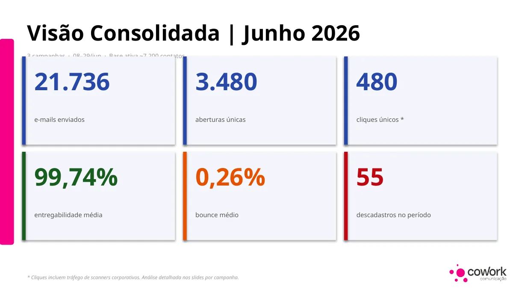

Nem todo clique é uma pessoa.
Um trabalho de inbound e analytics em que a principal descoberta não foi aumentar uma métrica, mas entender por que parte dela não representava comportamento humano.
Uma base saudável não garantia uma leitura saudável.
As três campanhas de junho apresentavam boa entregabilidade e bounce baixo. O problema apareceu quando a métrica de clique foi comparada ao tráfego efetivamente recebido pelo site.

480 cliques registrados. 135 acessos ao site.
O número que importava era o menor.
Dos 480 cliques reportados, 345 apresentavam padrão compatível com scanners corporativos varrendo links. A análise precisava separar atividade de segurança de engajamento real.

Melhorar a mensuração antes de comemorar o CTR.
O direcionamento foi criar distinção clara entre links próprios e externos por UTMs, garantir um destino rastreável para o site em cada newsletter e retomar campanhas que estavam em rascunho com processo de aprovação mais previsível.
Plataforma mostra atividade. Analytics precisa mostrar significado.
O trabalho de análise começa quando o número deixa de ser aceito automaticamente e passa a ser confrontado com comportamento real.
Uma métrica mais honesta para orientar o próximo ciclo.
O relatório reclassificou o problema: a base não estava “sem engajamento”; havia boa entrega, mas o desenho dos links e o ruído técnico impediam uma leitura confiável de intenção. A recomendação passou a ser melhorar destinos, UTMs e conteúdo próprio.